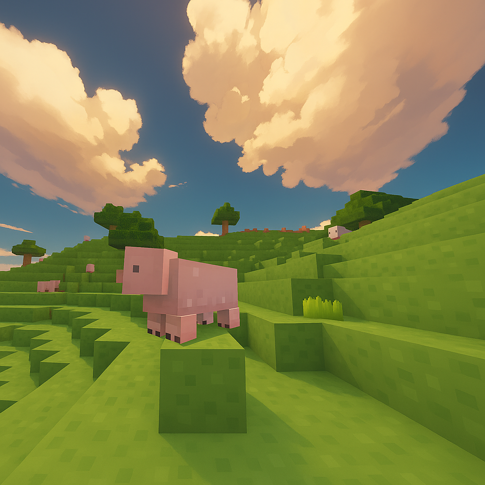

main
videos
Tpacks
maps (unfinished)
codes (unfinished)

Dusty_sk
About me
I am a bloxd.io YouTuber, my goal is to someday achieve YouTuber rank or just beat @ChatDan. Please subscribe.
(send me codes/maps you want to be on my page here: dustysr204@gmail.com)
📺 Subscribe
See my live stats here:
stats